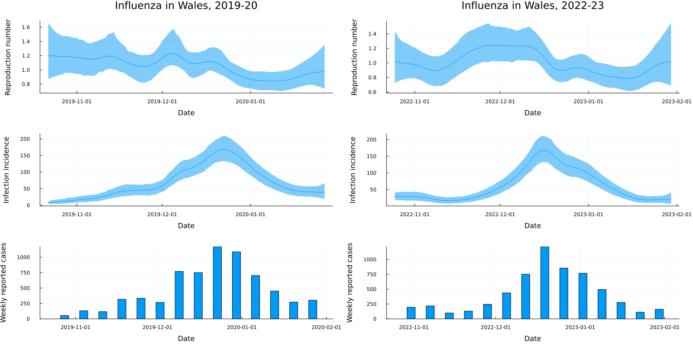

Code
using Plots, Measures
include("../src/LoadData.jl")
include("../src/PMMH.jl")
include("../src/FitModel.jl")
include("../src/MarginalPosterior.jl")
include("../src/Support.jl")
function temporallyAggregatedModel(θ, Y::DataFrame, opts::Dict)
# Extract frequently used options
T = opts["T"]
N = opts["N"]
L = opts["L"]
ω = opts["ω"]
# Initialise output matrices
R = zeros(N, T)
I = zeros(N, T)
W = ones(N, T)
# Sample from initial distributions
R[:,1] = rand(opts["pR0"], N)
I[:,1] = rand(opts["pI0"], N)
# Run the filter
for tt = 2:T
# Project according to the state-space model
R[:,tt] = exp.(rand.(Normal.(log.(R[:,tt-1]), θ[1])))
Λ = sum(I[:, (tt-1):-1:1] .* ω[1:(tt-1)]', dims=2) ./ sum(ω[1:(tt-1)])
I[:,tt] = rand.(Poisson.(R[:,tt] .* Λ))
# Weight according to the observation model, but only on the day that we observe data
if tt % 7 == 0
# Fetch expected reported cases
μt = sum(I[:,(tt-6):1:tt], dims=2)
# Calculate weights
r = max.(μt, 1)/θ[2]
p = 1 / (1 + θ[2])
W[:,tt] = pdf.(NegativeBinomial.(r, p), Y.Ct[tt])
# Resample
inds = wsample(1:N, W[:,tt], N; replace=true)
R[:, max(tt - L, 1):tt] = R[inds, max(tt - L, 1):tt]
I[:, max(tt - L, 1):tt] = I[inds, max(tt - L, 1):tt]
end
end
# Store output as three-dimensional array
X = zeros(N, T, 2)
X[:,:,1] = R
X[:,:,2] = I
# Forecast
return(X, W)
end
# Specify generation time distribution parameters
gamma_mean = 2.6
gamma_sd = 1.3
gamma_shape = gamma_mean^2 / gamma_sd^2
gamma_scale = gamma_sd^2 / gamma_mean
opts = Dict(
# Bootstrap filter options
"T" => missing, # Number of time-steps
"N" => 1000, # Number of particles
"L" => 50, # Fixed-lag resampling length
"pR0" => Uniform(0.5, 3), # Prior on Rt at t = 0
"pI0" => DiscreteUniform(1, 5), # Prior on It at t = 0
# Generation time distribution
"ω" => pdf.(Gamma(gamma_shape, gamma_scale), 1:100) / sum(pdf.(Gamma(gamma_shape, gamma_scale), 1:100)), # Serial interval: Gamma with mean 2.6 and sd 1.3 days
# PMMH options
"nChains" => 3,
"chunkSize" => 100,
"maxChunks" => 50,
"maxRhat" => 1.05,
"minESS" => 100,
"showChunkProgress" => false,
"propStdDevInit" => [0.05, 0.5],
"paramPriors" => [Uniform(0, 1), Uniform(0, 10)],
"initialParamSamplers" => [Uniform(0.1, 0.3), Uniform(4, 6)],
"paramNames" => ["σ", "k"],
# Marginal posterior options
"posteriorNumberOfParticles" => 5000,
"posteriorParamSamples" => 100,
"stateNames" => ["Rt", "It"]
)
# Load data
Y1 = loadData("Ogi-Gittins-201920");
opts["T"] = size(Y1)[1]
opts["pI0"] = DiscreteUniform(5, 10)
# Fit the model
(df_states1, df_params1, θ1, diag1) = fitModel(temporallyAggregatedModel, Y1, opts; verbose=false)
df_states1.Date = [Y1.Date; Y1.Date]
# Fit the second set of data
Y2 = loadData("Ogi-Gittins-202223");
opts["T"] = size(Y2)[1]
opts["pI0"] = DiscreteUniform(20, 40)
# Fit the model to the second set of data
(df_states2, df_params2, θ2, diag2) = fitModel(temporallyAggregatedModel, Y2, opts; verbose=false)
df_states2.Date = [Y2.Date; Y2.Date]
# Plot the data and the results
df_R_1 = df_states1[df_states1.variable .== "Rt", :]
df_I_1 = df_states1[df_states1.variable .== "It", :]
df_R_2 = df_states2[df_states2.variable .== "Rt", :]
df_I_2 = df_states2[df_states2.variable .== "It", :]
plot_R_1 = plot(df_R_1.Date, df_R_1.mean, ribbon=(df_R_1.mean .- df_R_1.lower, df_R_1.upper .- df_R_1.mean), xlabel="Date", ylabel="Reproduction number", legend=false)
plot_I_1 = plot(df_I_1.Date, df_I_1.mean, ribbon=(df_I_1.mean .- df_I_1.lower, df_I_1.upper .- df_I_1.mean), xlabel="Date", ylabel="Infection incidence", legend=false)
plot_R_2 = plot(df_R_2.Date, df_R_2.mean, ribbon=(df_R_2.mean .- df_R_2.lower, df_R_2.upper .- df_R_2.mean), xlabel="Date", ylabel="Reproduction number", legend=false)
plot_I_2 = plot(df_I_2.Date, df_I_2.mean, ribbon=(df_I_2.mean .- df_I_2.lower, df_I_2.upper .- df_I_2.mean), xlabel="Date", ylabel="Infection incidence", legend=false)
plot_C_1 = bar(Y1.Date, Y1.Ct, xlabel="Date", ylabel="Weekly reported cases", legend=false, bar_width=3)
plot_C_2 = bar(Y2.Date, Y2.Ct, xlabel="Date", ylabel="Weekly reported cases", legend=false, bar_width=3)
plot_all_1 = plot(plot_R_1, plot_I_1, plot_C_1, layout=(3, 1), size=(800, 800))
plot_all_2 = plot(plot_R_2, plot_I_2, plot_C_2, layout=(3, 1), size=(800, 800))
p = plot(plot_all_1, plot_all_2, layout=(1, 2), size=(1600, 800), titlefontsize=16, margins=6mm)
p = plot!(p[1], title="Influenza in Wales, 2019-20")
p = plot!(p[4], title="Influenza in Wales, 2022-23")
display(p)